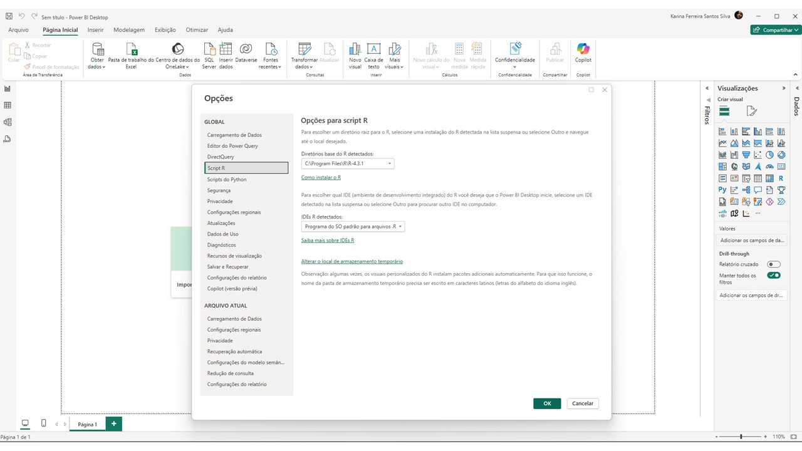
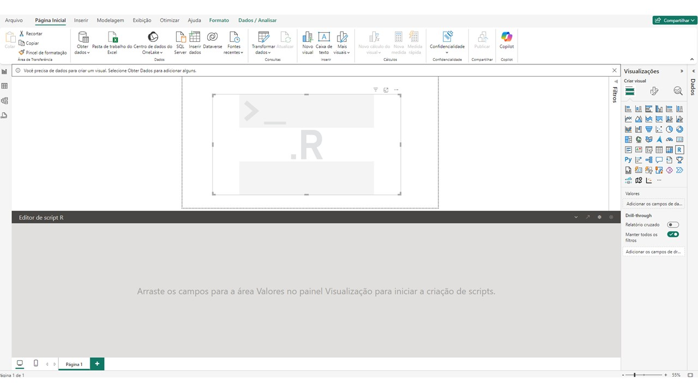

Nesta seção, exploraremos como integrar o R ao Power BI, ampliando as capacidades de análise e visualização de dados. A integração do R permite que você utilize scripts para realizar análises avançadas, manipular dados e criar visualizações personalizadas diretamente no Power BI.
Veremos três aspectos principais:
Configuração do Ambiente e Execução de Scripts do R: Aprenderemos como preparar o ambiente, executar scripts do R para transformar dados e desenvolver visualizações customizadas, aproveitando ao máximo as capacidades analíticas do R no Power BI.
Benefícios da Integração: Exploraremos as vantagens de combinar o poder do R com o Power BI, incluindo análises avançadas, visualizações especializadas e flexibilidade para manipulação de dados.
Limitações da Integração: Discutiremos as restrições da integração, como limitações de atualização no Power BI Service e questões de desempenho, para que você possa tomar decisões informadas sobre o uso do R no Power BI.
1. Integrando o R ao Power BI
Integrar o R ao Power BI permite que você use scripts do R para manipular dados, realizar análises estatísticas avançadas e criar visualizações customizadas.
1.1 Configurar o Ambiente R:
Instale o R: Primeiro, certifique-se de que o R está instalado em sua máquina. Você pode baixá-lo no site oficial do R Project.
Instale o RStudio: Embora não seja obrigatório, o RStudio é um ambiente de desenvolvimento que facilita o trabalho com scripts R.
1.2 Configurar o Power BI para Usar o R:
Abra o Power BI Desktop.
Vá em Arquivo > Opções e Configurações > Opções.
Em Scripts do R, selecione o local de instalação do R no campo Detecção de instalação do R.
Clique em OK para confirmar.

1.3 Usar Scripts do R para Transformação de Dados:
No Power BI, vá para o Editor de Consultas.
Em Transformar Dados, clique em Script R.
Uma janela será aberta para você digitar seu script R. Esse script será executado para manipular ou transformar os dados conforme necessário.

1.4 Criar Visualizações Personalizadas com o R:
No Power BI, vá para o painel de Visualizações e selecione o ícone de Gráfico R (ícone R).
Uma área de script será exibida na parte inferior. Aqui você pode escrever o código para criar gráficos usando pacotes como ggplot2, plotly ou lattice.
Arraste os campos desejados para o painel de valores e ajuste o código R para criar a visualização.
O Power BI renderizará a visualização R como uma imagem dentro do relatório.
2. Benefícios da Integração do R ao Power BI:
Análises Avançadas: Use o poder analítico do R para estatísticas, machine learning e outras análises que não são possíveis diretamente no Power BI.
Visualizações Customizadas: Crie gráficos altamente personalizados, como mapas de calor, gráficos de densidade e outros que não estão disponíveis por padrão no Power BI.
Automação e Eficiência: Automatize tarefas de transformação complexas e crie fluxos de trabalho de dados mais eficientes.
3. Limitações da Integração do R ao Power BI:
Apenas no Power BI Desktop: Os scripts R são executados localmente no Power BI Desktop e não no Power BI Service (online).
Imagens Estáticas: As visualizações do R são renderizadas como imagens estáticas dentro do Power BI, o que limita interatividade como rolar, passar o mouse e ampliar, diferentemente de outros gráficos nativos do Power BI.
Processamento Local: A execução dos scripts R depende do desempenho do seu computador local. Scripts complexos ou grandes volumes de dados podem sobrecarregar o sistema e tornar o Power BI Desktop mais lento ou até mesmo travar.
Limitações de Memória: Visualizações e scripts que processam grandes conjuntos de dados podem consumir muita memória, o que impacta o desempenho do Power BI Desktop, especialmente em máquinas com menos recursos.
Pacotes Restritos no Power BI Service: Embora muitos pacotes populares do R funcionem no Power BI Desktop, alguns pacotes específicos podem não ser compatíveis ou podem precisar de configuração adicional para funcionar corretamente. No Power BI Service, a lista de pacotes suportados é restrita.
Próximos passos
Na próxima seção, você aprenderá a criar visualizações de box plot e dot plot usando a integração do R com o Power BI. Exploraremos como configurar scripts do R para gerar esses gráficos diretamente no Power BI, permitindo análises detalhadas e personalizadas dos dados.